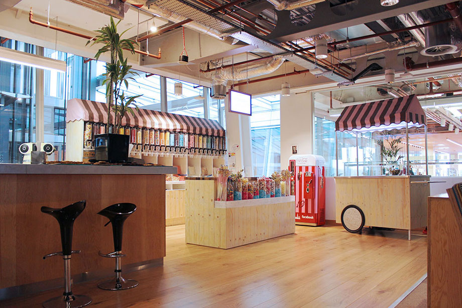

Недавно, в рамках развивающей командировки, мне случилось посетить несколько известных лондонских компаний, которые занимаются UX в разных сферах, начиная с банков и заканчивая виртуальной реальностью. Чтобы систематизировать полученные там знания, я хочу об этом рассказать. Заодно можно сравнить этот опыт с тем, что происходит у нас. Речь пойдет о Facebook, AKQA, DesignStudio, Telegraph, Ustwo, Foolproof, SkyScanner, Barclays, CXPartners, Unit9, Fjord и Badoo. Сначала обо всех вместе, потом о нескольких в отдельности.
Несмотря на разные области, в которых работают студии, у них много общего в подходах и самой работе. Начнем с простого.
Каждая из перечисленных компаний рассказывала и показывала нам о себе в своей естественной среде обитания. Территориально это могут быть здания в хипстерском районе, несколько этажей в самом центре или один из лучших в этом мире коворкингов, но главный принцип соблюдается в любом случае. Топовые лондонские специалисты по пользовательскому взаимодействию работают в таких условиях, куда хочется приходить не потому, что вы должны, а потому, что вам там нравится. Правильно организованное пространство работает на них, а иногда и за них.
Нет необходимости рассказывать, что вы, допустим, «молодая и динамично развивающаяся компания» гостю, который видит, что даже уголок с конфетами организован на вашем уровне:
Офис Facebook. Фото из блога lovelifelovefashion.be
Во-первых, она есть. Одной фразой чаще всего ее озвучивали так — «Правильные люди в комнате». Разные правильные люди, которые чувствуют и взаимодействуют по-разному. Поскольку речь идет о компаниях, которые двигают вперед не только свою индустрию, команды, при помощи которых они это делают, организованы соответственно. У каждой есть свой тест на вменяемость, чтобы выбрать из множества хороших специалистов тех, кого можно назвать своими людьми. Дальше сотрудникам только помогают в том, что они сами выбирают делать.
Проверяется и ценится не время, проведенное на рабочем месте, а результат труда (как бы кощунственно это не прозвучало в постсоветских по духу компаниях). Вместо совещаний ради совещаний — коммуникационные завтраки по понедельникам, вместо отслеживания присутствия сотрудника на рабочем стуле — проверка его вклада в развитие компании, вместо прыжков в мешках на тимбилдингах — совместные походы на самые острые культурные мероприятия.
Во-вторых, все максимально децентрализовано. Если вы встретили самого приятного и легкого в общении человека, скорее всего, это кто-то из директоров, отец-основатель компании или один из десятки лучших специалистов по UX на планете. Люди сами выбирают себе задачи, над которыми будут работать, сами находят, с кем и как их сделать лучшим образом, и сами потом за них отвечают. Все знают, где находятся, и знают, куда хотят прийти. Как они сами об этом говорят, «less ceremony more process».
SkyScanner. Самой яркой и зрелищной стала презентация от Стива Пирса. Он считает, должно быть заметно, что презентация пришла от дизайнера. В нее были собраны тезисы, о которых все вроде как знают, но мало кто формулирует и, тем более, записывает. Например, про шесть чувств современного дизайнера: смысл, заразительность, синергию, эмпатию, игру (в смысле повышения уровня допамина) и красоту. Или про то, что вслед за индустриальной, информационной и концептуальной эрами, мы переживаем Новый ренессанс. Стив рассказал, на что тратил свои дизайнерские калории в Skype (еще до эры мессенджеров) и на что он тратит их теперь в SkyScanner.
DesignStudio. Ребята считают, что именно сейчас мы все переживаем Золотой век дизайн-мышления. Работают они соответственно этому утверждению и так же придумывают методы. Подключают к процессу как левое, так и правое полушария. Чтобы понять, что трогает клиента и вовлечь его в процесс разработки, DesignStudio проводят различного вида демонстрации. Например, показывают на встрече фокус с угадыванием игральной карты, чтобы наглядно провести параллель с созданием дизайна. Они знают, что угадают карту, заказчик знает, что они угадают карту, ему только неизвестно, как именно они это делают. Другой клиент не мог определиться, какие слоганы выбрать для своей кампании. Тогда DesignStudio написали все фразы на транспарантах и вывели с ними под окна переговорки небольшое шествие-сюрприз, чтобы заказчику стало виднее, какие слоганы действительно цепляют.
Основные документы, которые необходимо было получить при переезде:
Роль дизайнера продолжает меняться. Основные навыки, которые он приносит в команду, смещаются. Сейчас вам не нужен дизайнер, чтобы решить использовать диалоговый интерфейс. Мы больше не рисуем картинки. Stuff starts to get interesting. Важно быть способным понять человека, иметь хорошие коммуникационные способности, потому что невозможно коммуницировать достаточно. У совершенно разных людей будет одинаковый опыт с вашим продуктом, если вы не знаете, кем эти люди являются. Нужно уметь упрощать объем информации, делать ее пригодной для использования, частично маскировать. Не создавать скриншот для отдельного гаджета, а работать с экосистемой инструментов. Использовать искусственный интеллект. Использовать естественный интеллект. Убедиться, что дизайн присутствует в основе всего, что мы делаем. Быть продуктивными и понимать, что в действительности значит успех для конкретного бизнеса. Знать, какое влияние технология оказывает на аудиторию проекта. Сначала написать книгу, потом дизайнить ее обложку.